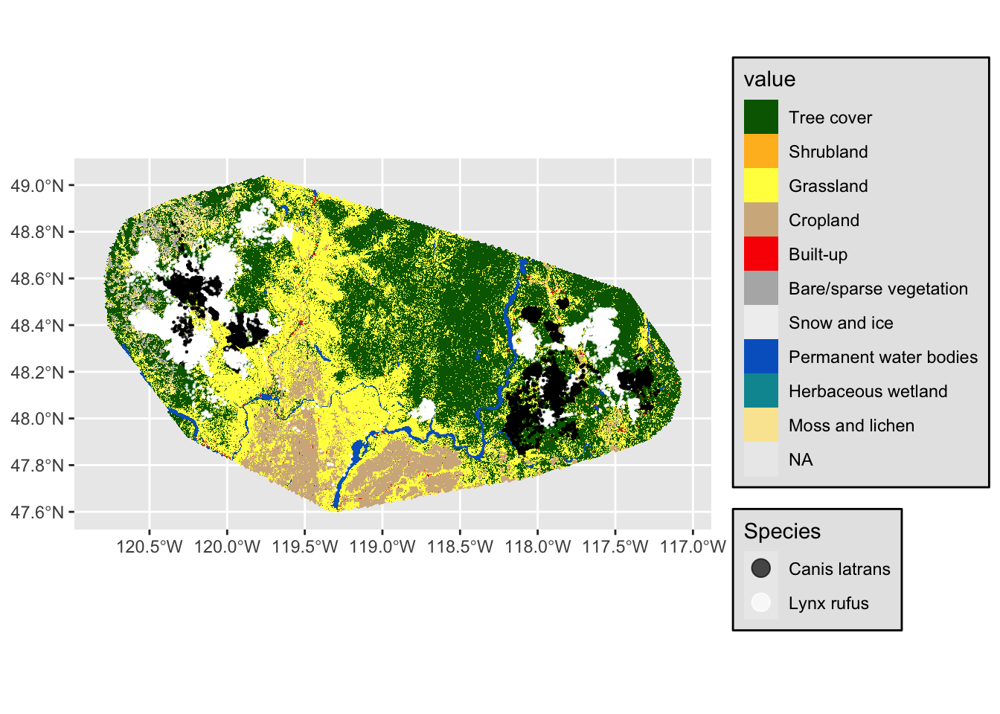

# 1. LOAD LIBRARIES ------------------------------------------------------------
pacman::p_load(
rstac, # For accessing STAC APIs
sf,
terra,
tidyverse,
tidyterra
)
# 2. PREPARE STUDY AREA FROM TRACKING DATA -------------------------------------
# Read and prepare tracking data
# From https://www.movebank.org/cms/webapp?gwt_fragment=page%3Dstudies%2Cpath%3Dstudy2636372210
tracking_data <- read_delim("data/input_bobcat_coyotes_wa_gps.csv")Rows: 121706 Columns: 15
── Column specification ────────────────────────────────────────────────────────
Delimiter: ","
chr (7): gps:fix-type-raw, mortality-status, sensor-type, individual-taxon-...
dbl (6): event-id, location-long, location-lat, gps:hdop, gps:satellite-cou...
lgl (1): visible
dttm (1): timestamp
ℹ Use `spec()` to retrieve the full column specification for this data.
ℹ Specify the column types or set `show_col_types = FALSE` to quiet this message.# Convert to SF object (WGS84)
animal_sf <- tracking_data |>
st_as_sf(
coords = c("location-long", "location-lat"),
crs = 4326
)
# Create study area boundary with 10km buffer
study_area <- animal_sf |>
st_union() |>
st_convex_hull() |> # Create minimum convex polygon
st_buffer(10000) |> # 10km buffer in CRS units
st_transform(4326) # Ensure WGS84 for ESA download
# 3. DOWNLOAD ESA WORLDCOVER DATA ----------------------------------------------
# Connect to Microsoft Planetary Computer STAC
stac_api <- stac("https://planetarycomputer.microsoft.com/api/stac/v1")
# Search for ESA WorldCover 2021 data within study area
esa_items <- stac_search(
q = stac_api,
collections = "esa-worldcover",
datetime = "2021-01-01/2021-12-31", # 2021 version
bbox = st_bbox(study_area), # Study area bounding box
limit = 100
) |>
get_request() |>
items_sign(sign_planetary_computer()) # Authenticate
# Download all assets
assets_download(
items = esa_items,
asset_names = "map",
output_dir = file.path(getwd(), "data/"),
overwrite = TRUE
)
|
| | 0%
|
|================== | 25%
|
|=================================== | 50%
|
|==================================================== | 75%
|
|======================================================================| 100%###Items
- features (4 item(s)):
- ESA_WorldCover_10m_2021_v200_N48W123
- ESA_WorldCover_10m_2021_v200_N48W120
- ESA_WorldCover_10m_2021_v200_N45W123
- ESA_WorldCover_10m_2021_v200_N45W120
- assets: map
- item's fields:
assets, bbox, collection, geometry, id, links, properties, stac_extensions, stac_version, type# 4. PROCESS ESA DATA ----------------------------------------------------------
# Get all downloaded tiles
esa_tiles <- list.files(
path = file.path(getwd(), "data/esa-worldcover/v200/2021/map"),
pattern = "\\.tif$",
full.names = TRUE
)
# Merge and crop tiles to study area
rasters_list <- lapply(esa_tiles, rast)
combined <- do.call(merge, rasters_list)
|---------|---------|---------|---------|
=========================================
esa_cropped <- crop(combined, vect(study_area))
|---------|---------|---------|---------|
=========================================
land_cover <- mask(esa_cropped, vect(study_area))
|---------|---------|---------|---------|
=========================================
|---------|---------|---------|---------|
=========================================
# Convert to factor for plotting
land_cover <- as.factor(land_cover)
|---------|---------|---------|---------|
=========================================
# Save the final cropped/merged land cover
writeRaster(
land_cover,
"data/output_ESA_land_cover_washington.tif", # Output filename
overwrite = TRUE, # Overwrite if exists
datatype = "INT1U", # Optimize for categorical data
gdal = c("COMPRESS=LZW") # Reduce file size
)
|---------|---------|---------|---------|
=========================================
# 5. VISUALIZE RESULTS ---------------------------------------------------------
# Class labels (ESA WorldCover 2021)
class_labels <- c(
"10" = "Tree cover",
"20" = "Shrubland",
"30" = "Grassland",
"40" = "Cropland",
"50" = "Built-up",
"60" = "Bare/sparse vegetation",
"70" = "Snow and Ice",
"80" = "Permanent water bodies",
"90" = "Herbaceous wetland",
"95" = "Mangroves",
"100" = "Moss and lichen"
)
# Create plot
ggplot() +
tidyterra::geom_spatraster(
data = land_cover,
maxcell = 1e6
) +
scale_fill_manual(
values = c(
"10" = "#006400", "20" = "#FFBB22", "30" = "#FFFF4C",
"40" = "#F096FF", "50" = "#FA0000", "60" = "#B4B4B4",
"70" = "#F0F0F0", "80" = "#0064C8", "90" = "#0096A0",
"95" = "#00CF75", "100" = "#FAE6A0"
),
labels = class_labels,
na.value = NA
) +
geom_sf(
data = animal_sf,
color = "black",
size = 1,
alpha = 0.7
) +
labs(
title = "Animal Tracks Over Land Cover",
fill = "Land Cover Class"
) +
theme_minimal()<SpatRaster> resampled to 1000538 cells.
Scale for fill is already present.
Adding another scale for fill, which will replace the existing scale.
ggsave("img/esa_landcover.png")Saving 7 x 5 in image